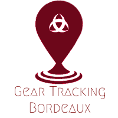

Accueil

Équipements publics :
Vue par quartier
Établissements culturels
Écoles Maternelles et Primaires
Établissements pour la petite enfance
Établissements et lieux de services
Établissements sociaux
Lieux de sports et loisirs
Toilettes publiques
Les parkings publics
Les points d'accès à
internet
Les mobiliers urbains pour le stationnement 2 roues
Les Aires de jeux
Parcs, jardins et squares
GTB© -Tous droits reservés.-